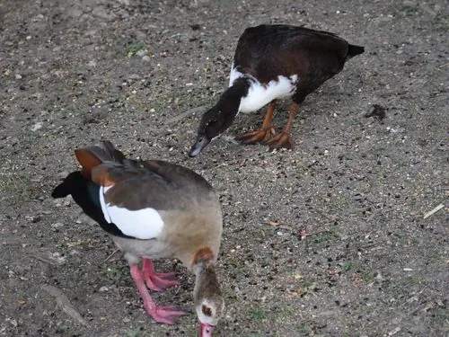

鸟类 · 动物界
埃及雁 Alopochen aegyptiaca

非洲常见的褐色雁类，眼周有一块深色斑，飞行时露出黑白分明的翅面，常成对栖息于河湖岸边，也被引入欧洲多地。
- 分类
- 门脊索动物门纲鸟纲目雁形目科鸭科属埃及雁属
- 栖息环境
- 非洲的河流、湖泊、沼泽与水库，也适应农田、公园和城镇水域
- 地理分布
- 非洲撒哈拉以南及尼罗河谷，并被引入英国、荷兰、德国等地
- 保护级别
- IUCN 无危（LC）
物种志
埃及雁体长 63–73 cm，体重 1.5–2.2 kg，雌雄羽色相似。通体黄褐色，背部颜色较深，眼周有一圈暗褐色斑块，像戴着一副眼罩；颈下和胸部颜色较浅，飞羽白色与黑色相间，飞行时翅面黑白对比鲜明，腿和喙呈粉红色。
它们原产于非洲撒哈拉以南及尼罗河谷，栖息于河流、湖泊、沼泽和水库，也常出现在农田、公园与城镇水域，如今已被引入英国、荷兰、德国等欧洲国家并形成野生种群。埃及雁多成对或结小群活动，性机警而好斗，繁殖期会猛烈驱赶靠近巢区的其他鸟类。它们在高草、树洞或建筑物上筑巢，每窝产卵 5–11 枚，雌鸟孵化约 28 天。食物以草、种子、谷物为主，也吃水生植物和小型无脊椎动物。
形态与习性
- 食性青草、种子、谷物、水生植物及小型无脊椎动物
- 体长63–73 cm
- 体重1.5–2.2 kg
- 繁殖每窝 5–11 枚，雌鸟孵化约 28 天
- 寿命约 15–20 年
- 特征眼周暗斑，飞行时翅面黑白分明
趣味知识
- 埃及雁的属名 Alopochen 意为“狐狸雁”，得名于它红褐色的羽色。
- 古埃及壁画中常有埃及雁的形象，它被视为尼罗河畔常见的鸟类。
- 它们喜欢在树上或高处筑巢，雏鸟出壳后要从高处跳下跟随亲鸟下水。